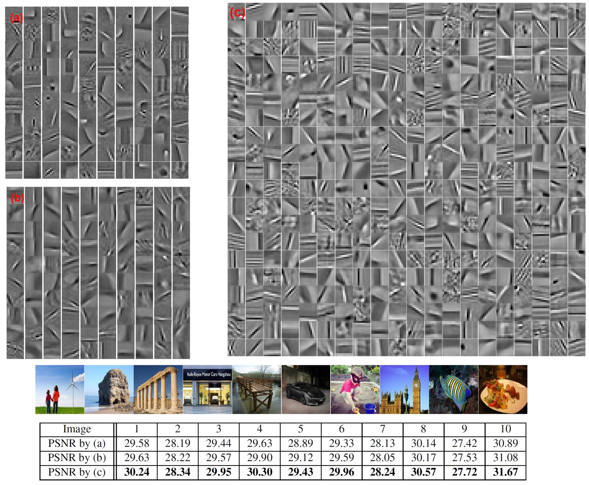

Stochastic Convolutional Sparse Coding
Jinhui Xiong,
Peter Richtárik, Wolfgang Heidrich
The International Symposium on Vision, Modeling, and Visualization, 2019

Left: Experimental setup, showing the orientation of the camera and the illuminating projector. Note the intensity-gradient direction is in the
depth direction with respect to the camera. Right: Reconstructed rotating flow pathlines of 960 unique particles, colored by the velocity
magnitude in mm/s.
Abstract
State-of-the-art methods for Convolutional Sparse Coding usually employ Fourier-domain solvers in order to speed up the convolution operators. However, this approach is not without shortcomings. For example, Fourier-domain representations im-
plicitly assume circular boundary conditions and make it hard to fully exploit the sparsity of the problem as well as the small
spatial support of the filters.
In this work, we propose a novel stochastic spatial-domain solver, in which a randomized subsampling strategy is introduced
during the learning sparse codes. Afterwards, we extend the proposed strategy in conjunction with online learning, scaling the
CSC model up to very large sample sizes. In both cases, we show experimentally that the proposed subsampling strategy, with
a reasonable selection of the subsampling rate, outperforms the state-of-the-art frequency-domain solvers in terms of execution
time without losing the learning quality. Finally, we evaluate the effectiveness of the over-complete dictionary learned from
large-scale datasets, which demonstrates an improved sparse representation of the natural images on account of more abundant
learned image features.
Paper
paper [Aguire-Pablo2019SingleCameraPTV.pdf (6.9MB)]